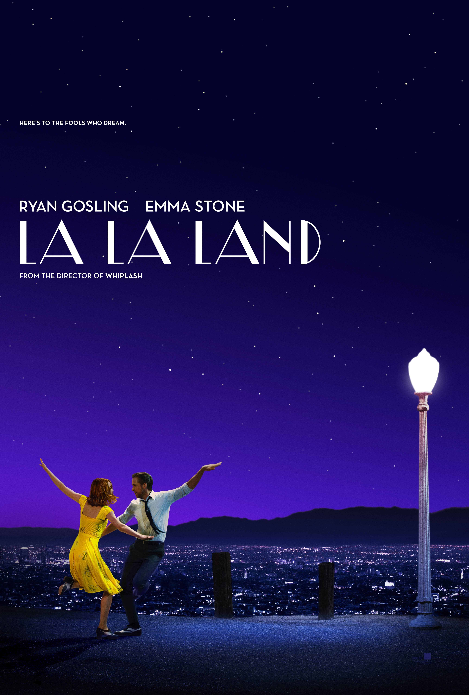

爱乐之城（La La Land，2016）
一句话短评：
内容简介：
- 米娅（艾玛·斯通 Emma Stone 饰）渴望成为一名演员，但至今她仍旧只是片场咖啡厅里的一名平凡的咖啡师，尽管不停的参加着大大小小的试镜，但米娅收获的只有失败。某日，在一场派对之中，米娅邂逅了名为塞巴斯汀（瑞恩·高斯林 Ryan Gosling 饰）的男子，起初两人之间产生了小小的矛盾，但很快，米娅便被塞巴斯汀身上闪耀的才华以及他对爵士乐的纯粹追求所吸引，最终两人走到了一起。
- 在塞巴斯汀的鼓励下，米娅辞掉了咖啡厅的工作，专心为自己写起了剧本，与此同时，塞巴斯汀为了获得一份稳定的收入，加入了一支流行爵士乐队，开始演奏自己并不喜欢的现代爵士乐，没想到一炮而红。随着时间的推移，努力追求梦想的两人，彼此之间的距离却越来越远，在理想和感情之间，他们必须做出选择.
短评：
- 1.年度十佳！最后在情字上找到了一个引人共鸣的点，人生就是一个不断追逐梦想的旅程，在某个时间点上，一个人遇到一个人，他们一起成长，相互鼓励，有美好，有痛苦，有成长，有遗憾，这就是人生。导演非常成熟老道，不仅有野心，也有足够的才华，歌舞元素几乎就是整个歌舞片的发展史，适合迷影爱好者。 ——亵渎电影
- 2.最后两人一吻上，眼泪就完全止不住，最后一直是痛哭。那段蒙太奇展示的就是电影的魔力啊！生活给不了的，电影可以给你，是那么浪漫、那么神奇的情感再现，最佳的电影造梦时刻。而至于理想、爱情、迷影、歌舞片、怀旧等等其他元素和小技巧反而可以放在之后了。最感慨的仍是电影的魅力，做一场电影梦吧！ ——桃桃林林
可播放资源：
- 哔哩哔哩 VIP免费观看
- https://www.bilibili.com/bangumi/play/ss26783?bsource=douban